Kapitel 01
Der Boden
Alles beginnt mit einer sechsgliedrigen Fruchtfolge. Ihr Herzstück ist die Gründüngung mit Rotklee: Er bindet Stickstoff im Boden und ersetzt so die Düngung, die ein Bioland-Betrieb nicht kaufen darf.
Getreide, Kartoffeln, Speiseöle, Senf und Nudeln von eigenen Flächen in Witten, Dortmund und Essen. Angebaut nach Bioland-Richtlinien, verarbeitet auf dem Hof, verkauft freitags am Gederfeldweg.
Was uns ausmacht
Was wir verkaufen, haben wir selbst gesät, geerntet und verarbeitet. Hundert Prozent hofeigene Saat, rückverfolgbar bis auf den Acker.
Kapitel · Die Ernte
Der Roder nimmt die Dämme auf, siebt die Erde ab und legt die Knollen in den Bunker. Was Sie hier sehen, ist unsere Fläche in Dortmund.
Sortiert nach Sorte
Jede Sorte wird getrennt geerntet und gelagert. So wissen wir bis in den Hofverkauf, von welchem Acker eine Kiste kommt.
Ohne Chemie
Nach den Kartoffeln kommt Rotklee. Er bindet Stickstoff und bereitet den Boden auf das Getreide vor.

Hofverkauf jeden Freitag von 8 bis 17 Uhr. Mehle, Nudeln, Öle und Senf im Regal, Kartoffeln nach Sorten in den Kisten.
Der Hof
Die Kornkammer Haus Holte liegt am Gederfeldweg in Witten. Dirk Liedmann und sein Partner Bernhard Pawliczek bewirtschaften die Felder seit 1987 nach den Richtlinien des Bioland-Verbandes. Unkraut wird mechanisch reguliert, die sechsgliedrige Fruchtfolge mit Rotklee hält den Boden gesund.
Als Bioland-Betrieb erfüllt der Hof einen Standard, der deutlich über den gesetzlichen Vorgaben der EU-Bio-Verordnung liegt.
Mehr über den Hof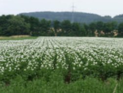
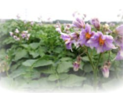
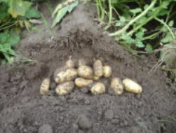
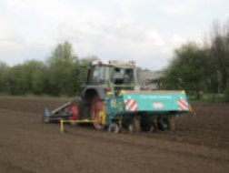
Kapitel 01
Alles beginnt mit einer sechsgliedrigen Fruchtfolge. Ihr Herzstück ist die Gründüngung mit Rotklee: Er bindet Stickstoff im Boden und ersetzt so die Düngung, die ein Bioland-Betrieb nicht kaufen darf.
Kapitel 02
Im Anbau 2025/2026 stehen Senf, Hafer, Rotklee, Winterweizen, Dinkel, Kartoffeln und Blaumohn auf den Flächen. Jede Kultur hat auf dem Hof einen Abnehmer: die Mühle, die Ölpresse, die Senfmühle oder das Regal.
Kapitel 03
Der erste Kleeaufwuchs geht als Säuberungsschnitt an eine Bio-Biogasanlage; die Nährstoffe kommen als Gärsubstrat auf den Hof zurück. Der zweite Aufwuchs ist so sauber, dass er als Saatgut gedroschen wird.
Kapitel 04
Getreide wird in Bäckerqualität vermahlen. Öle werden kalt gepresst, Leinöl bei unter 40 °C und ungefiltert. Senf entsteht traditionell auf Granitsteinen. Alles aus hundert Prozent hofeigener Saat.
Kapitel 05
Etwa 98 Prozent des Brotweizens gehen an Bäckereien. Der Rest steht freitags im Hofverkauf, im Onlineshop, im Naturkosthandel unter der Marke Ruhrtalgold und bei regionalen Partnern.
Die ganze Arbeit im Detail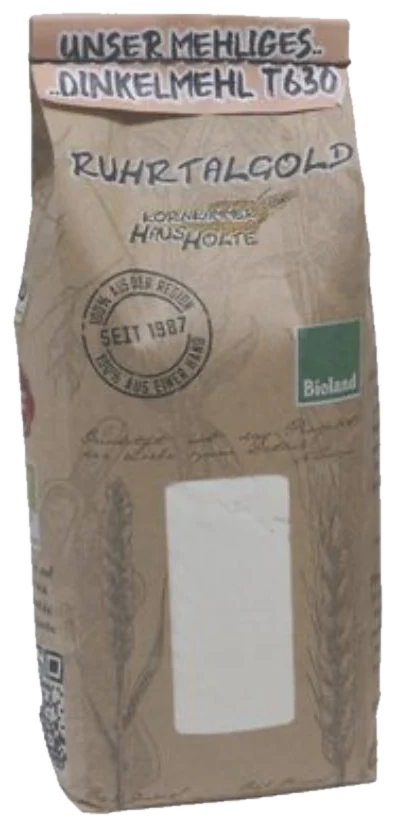
Ruhrtalgold · Mehle
Bäckerqualität
4,79 € 1 kg
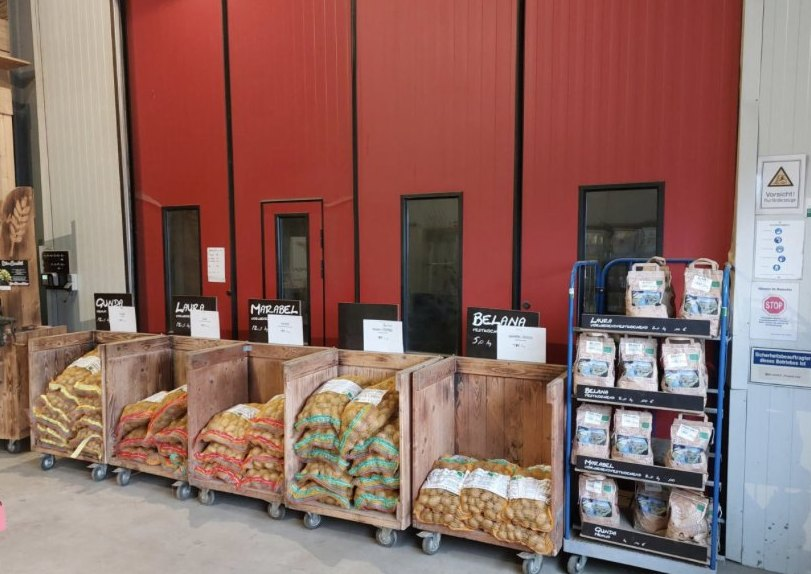
Senf, Öl, Mehl, Nudeln und Kartoffeln kommen von unseren eigenen Flächen.
1987
Seit diesem Jahr bewirtschaften Dirk Liedmann und Bernhard Pawliczek die Felder nach Bioland-Richtlinien.
Bestellen Sie per Anfrage aus dem Korb oder holen Sie freitags am Hof ab.
Zum SortimentBiologische Vielfalt
Sieben Kulturen, und was aus ihnen wird.
01 Senf

Wird in der Senfmanufaktur auf Granitsteinen zu drei Sorten vermahlen und in der Ölmanufaktur zu Senföl gepresst.
Zum Senf02 Hafer

Wird zu Haferkernen und zartblättrigen Haferflocken, in 500 Gramm bis 25 Kilogramm.
Zu Körnern und Flocken03 Rotklee

Das Herzstück der Fruchtfolge: Gründüngung, die Stickstoff bindet. Der erste Schnitt geht an eine Bio-Biogasanlage, der zweite wird Saatgut.
So funktioniert die Fruchtfolge04 Winterweizen

Wird zu Mehl Type 550 und Vollkornmehl in Bäckerqualität. Rund 98 Prozent des Brotweizens gehen an Bäckereien.
Zu den Mehlen05 Dinkel

Wird zu Mehl Type 630, Vollkornmehl, ganzen Körnern und zu hellen und dunklen Dinkelnudeln.
Zu den Nudeln06 Kartoffeln
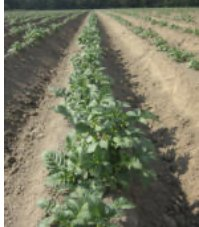
Wachsen 2025/2026 in Dortmund-Barop und Dortmund-Mengede. Erhältlich als Holter Knolle und Ruhrtalgold, festkochend bis mehlig.
Zu den Kartoffeln07 Blaumohn

Die Sorte Wintermohn wird nativ kaltgepresst. So bleibt der typische Mohngeschmack im Öl.
Zum Mohnöl100 % Transparenz

Klimaprojekt
Die Kornkammer ist einer der Betriebe im Netzwerk Pilotbetriebe. Dort wird untersucht, welche Treibhausgase in Pflanzenbau und Milchviehhaltung entstehen, als Gesamtbetrachtung aus Böden, Futterbau, Tierhaltung und Düngung.
Mehr zum Projekt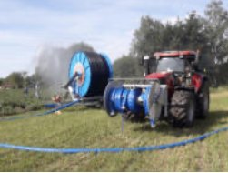
Wo Sie uns noch finden
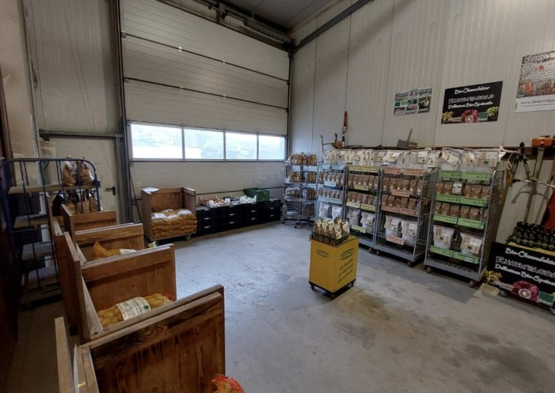
Das sagen Kundinnen und Kunden
„Die beiden Biosenf-Sorten haben ein vielschichtiges Senf-Aroma, so was Vergleichbares gibt es nicht im Supermarkt, selbst der Dijon-Senf kommt da nicht dran! Unbedingt probieren.“
„Achtung: Nur freitags geöffnet! Sehr gute Auswahl, regionale Produkte und nette Menschen.“
„Wir kaufen Kartoffeln, Rapsöl, Nudeln, Mehl und Haferflocken regelmäßig von hier über den Regionalladen grüne Perle in der Wittener Innenstadt und sind sehr …“
„Sehr nette Leute, kommunikativ, hilfsbereit. Gerne wieder.“
„Die Produkte sind wirklich erstklassig und es ist alles aus einer Hand. Mehr geht nicht.“
„Außerordentliches Einkaufserlebnis. Top geführtes familiäres Unternehmen. Super regionale Bioprodukte.“
„Hier kann man jeden Freitag Mehl, Getreide, Kartoffeln, Mohn und Öle direkt ab Hof kaufen. Die Qualität ist hervorragend und man wird immer sehr freundlich bedient.“
„Klasse Team! Immer freundlich und zuvorkommend … deshalb 5 Sterne!“
„Bio-Produkte der besonderen Art. Klasse Team.“
Rezensionen aus dem Google-Unternehmensprofil der Kornkammer Haus Holte, Stand Oktober 2026. Alle Rezensionen bei Google
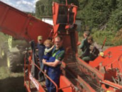

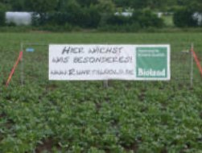
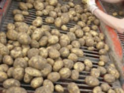
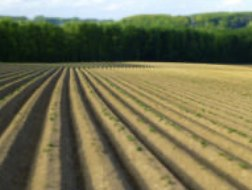


Kommen Sie vorbei
Hofverkauf jeden Freitag von 8 bis 17 Uhr. Fällt ein Feiertag auf den Freitag, sind wir am Donnerstag da. Wer vorher anrufen möchte: 02302 282 7475.